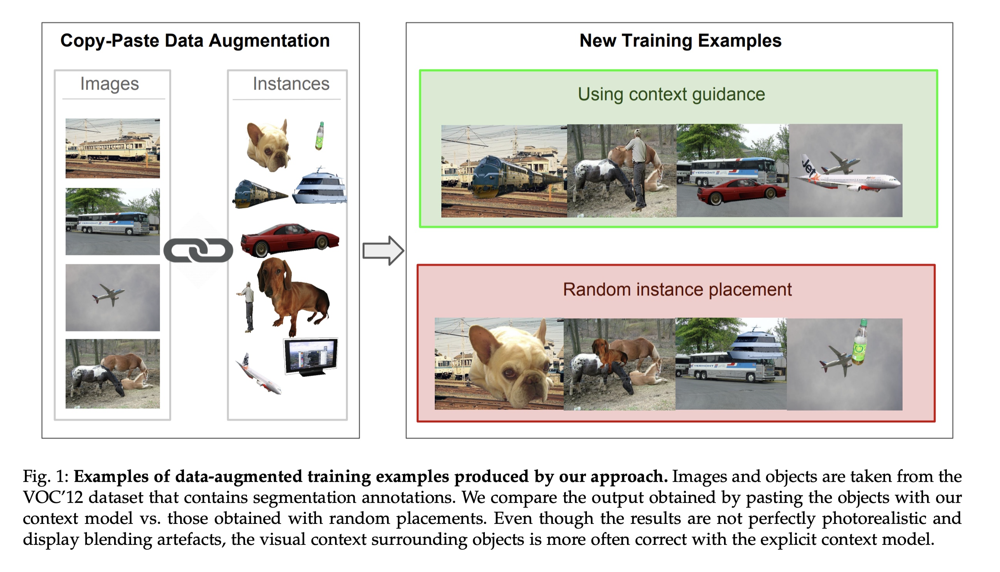
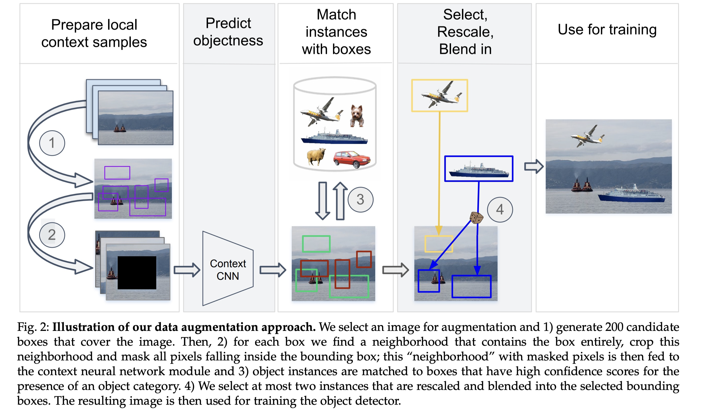
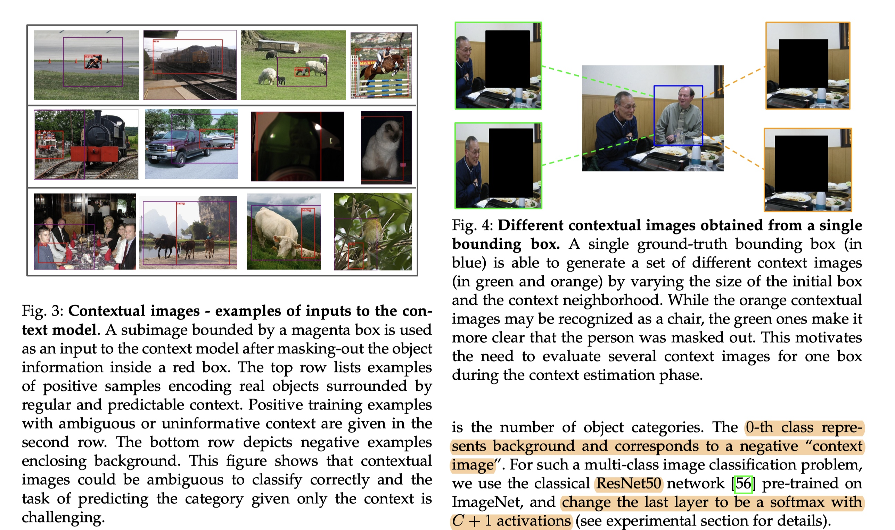
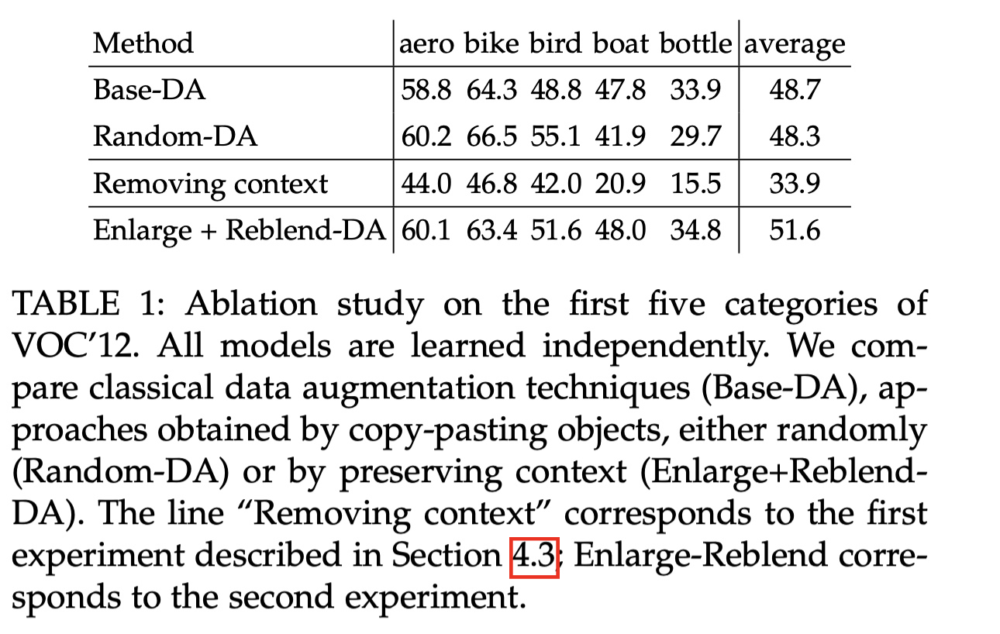
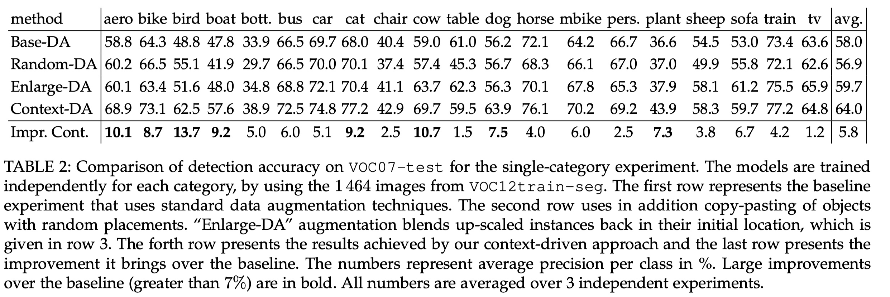
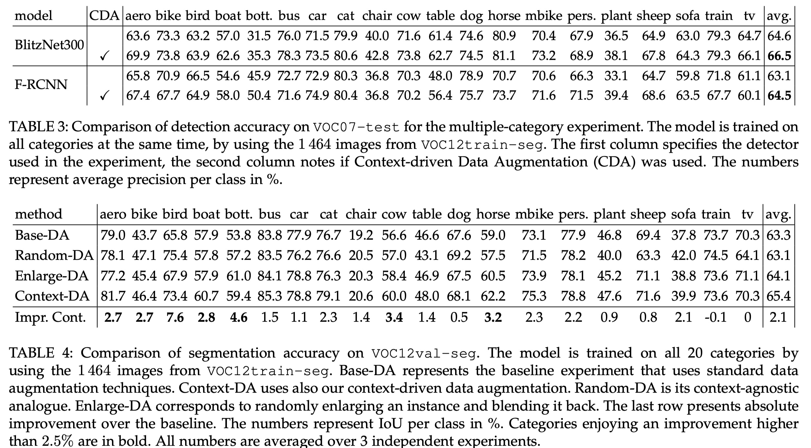
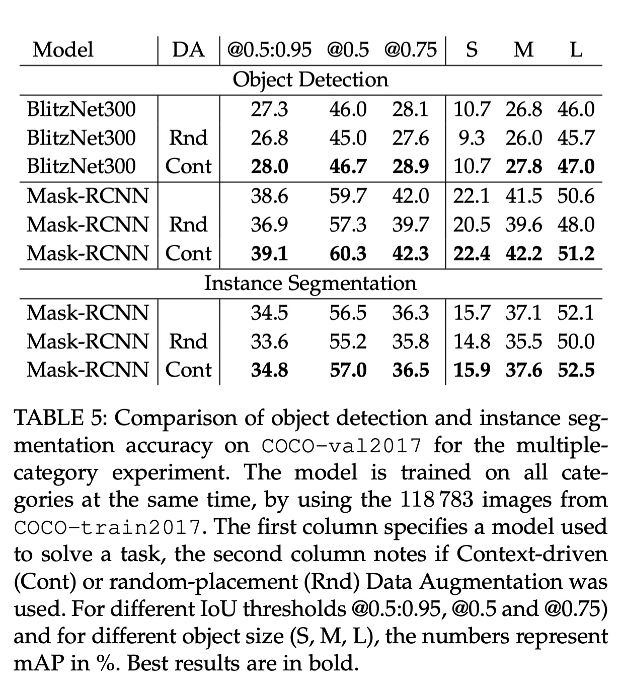
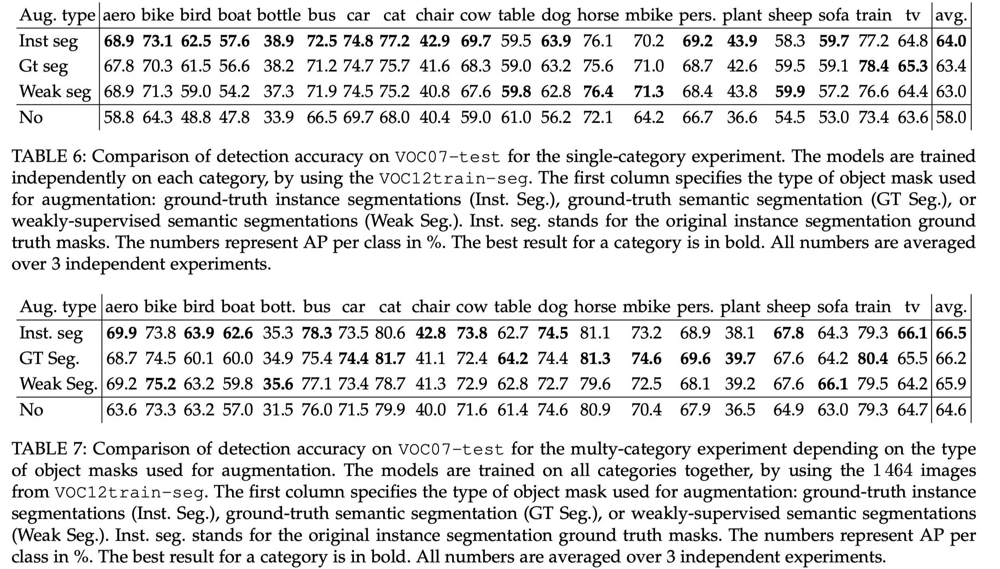
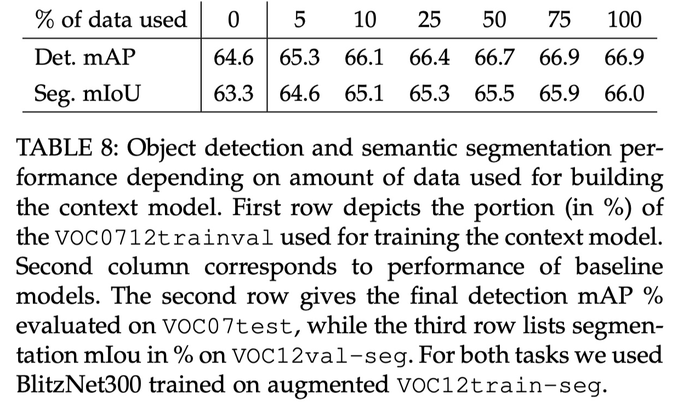

On the Importance of Visual Context for Data Augmentation in Scene Understanding
- Nikita Dvornik, Julien Mairal, Senior Member, IEEE, and Cordelia Schmid, Fellow, IEEE
Abstract
- simple image transformations can already improve predictive performance in most vision tasks, larger gains can be obtained by leveraging task-specific prior knowledge
- blending objects in existing scenes
- using instance segmentation annotations
- that randomly pasting objects on images hurts the performance, unless the object is placed in the right context.
- explicit context model by using a convolutional neural network
- predicts whether an image region is suitable for placing a given object or not. In our experiments
Introduction
- scene understanding
- context model based on a convolutional neural network.
- The model estimates the likelihood of a particular object category to be present inside a box given its neighborhood, and then automatically finds suitable locations on images to place new objects and perform data augmentation.
Explicit Context Modeling by CNN
- to guess the category of an object just by looking at its visual surroundings
- modeling by a convolutional neural network,
- Contextual data generation
- dataset that comes with bounding box
- object class annotations
- Each ground-truth bounding box in the dataset is able to generate positive “contextual images” that are used as input to the system
- One box is able to generate multiple different context images,
- To prevent distinguishing between positive and background images only by looking at the box shape and to force true visual context modeling, we estimate the shape distribution of positive boxes and sample the background ones from it
- we estimate the joint distribution of scale s and aspect ratio a with a two-dimensional histogram
- draw a pair (s, a) from this distribution in order to construct a background box
- Since in natural images there is more background boxes than the ones actually containing an object, we address the imbalance by sampling more background boxes,
Model training
- The input to the network are the “contextual images
- 300 × 300
- output of the network is a label in {0, 1, …, C}
- 0-th class represents background and corresponds to a negative “context image
- ResNet50
- change the last layer to be a softmax with C + 1 activations
Context-driven Data Augmentation
- Selection of candidate locations for object placement
- Since the model takes into account not only the visual surroundings but a box’s geometry too, we need to consider all possible boxes inside an image to maximize the recall
- However this is too costly and using 200 candidates was found to provide good enough bounding boxes among the top scoring ones.
- if an object of category c is present in an image it is a confident signal for the model to place another object of this class nearby.
- This often happens when only 200 candidate locations are sampled; however, evaluating more locations would introduce a computational overhead
- simple heuristic
- consists of drawing boxes in the neighborhood of this object
- and adding them to the final candidate set. The added boxes have the same geometry (up to slight
- distortions) as the neighboring object’s box.
- Candidate scoring process
- softmax output.
- generating a contextual image is not deterministic, predictions on two contextual images corresponding to the same box may differ substantially,
- After the estimation stage we retain the boxes where an object category has score greater than 0.7
- Blending objects in their environment
- blend an object at the corresponding location
- different types of blending techniques (Gaussian or linear blur, simple copy-pasting with no postprocessing, or generating blur on the whole image to imitate motion), and randomly choose one of them in order to introduce a larger diversity of blending artefacts
- We also do not consider Poisson blending in our approach, which was considerably slowing down the data generation procedure
- for our task than in [5]. As a consequence, we do not need to exploit external data to perform data augmentation
Updating image annotation.
- Once a new object is placed in the scene, we generate a bounding box for object detection by drawing the tightest box around that object
- In case where an initial object is too occluded by the blended one, i.e. the IoU between their boxes is higher than 0.8, we delete the bounding box of the original object from the annotations
- If a new instance occludes more than 80% of an object already present in the scene, we discard annotations for all pixels belonging to the latter instance.
- To obtain semantic segmentation masks from instance segmentations, each instance pixel is labeled with the corresponding objects class.
Why is Random Placement not Working?
- as violation of context constraints imposed by the dataset
- objects looking “out of the scene” due to different illumination conditions
- simply artifacts introduced due to blending techniques
Impact of blending when the context is right
- lack of visual context and the presence of blending artefacts may explain the performance drop
- presence of difference in illumination and blending artefacts is not critical for the object detection task
- Reducing the need for pixel-wise object annotation
- Our data augmentation technique requires instance-level segmentations, which are not always available in realistic scenarios
- relax the annotation requirements for our approach and show that it is possible to use the method when only bounding boxes are available
- Semantic segmentation + bounding box annotation
- Instance segmentation masks provide annotations to each pixel in an image and specify (i) an instance a pixel belongs to and (ii) class of that instance
- If these annotations are not available
- one may approximate them with semantic segmentation and bounding boxes annotation
- Semantic segmentation annotations are also pixel-wise, however they annotate each pixel only with the object category.
- Instance-specific information could be obtained from object bounding boxes, however this type of annotation is not pixel-wise and in some cases is not sufficient to assign each pixel to the correct instanc
- as long as a pixel in semantic map is covered by only one bounding box, it uniquely defines the object it belong
- otherwise, if more than one box covers the pixel, it is not clear which object it comes from
- When deriving approximate instance masks from semantic segmentation and bounding boxes (see Figure 9, column 2), we randomly order the boxes and assign pixels from a semantic map to the corresponding instances
- Whenever a pixel could be assigned to multiple boxes we choose a box that comes first in the orderin
Importance of Context Modeling Quality for Scene Understanding
- quality of a context model is mainly influenced by the amount of data it has received for training
- we increase the data size used for context modeling, we can see how both detection and segmentation improve; however, this gain diminishes as the data size keeps growin
- to improve scene understanding, the context model has to get visual context “approximately right” and further improvement is most likely limited by other factors such as unrealistic generated scenes and limited number of instances that are being copy-pasted
- On the other hand, if the context model is trained with little data, as in the case of using only 5% of the full set, our augmentation strategy tends to the random one and shows little improvement
Images
- 
- 
- 
- 
- 
- 
- 
- 
- 